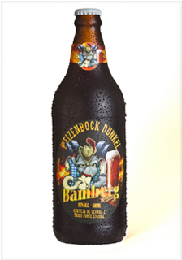

- Chope, 355 ml e 600 ml.
Bamberg Weizenbock
Cervejas
Aroma: Leve presença de malte com um sutil floral do lúpulo.
Aparência: Coloração amarela, com espuma persistente e cristalina.
Sabor: Nessa cerveja podemos notar um equilíbrio da doçura do malte com o amargor do lúpulo, porém tudo com muita sutileza.
Sensação na boca: Leve, com boa carbonatação.